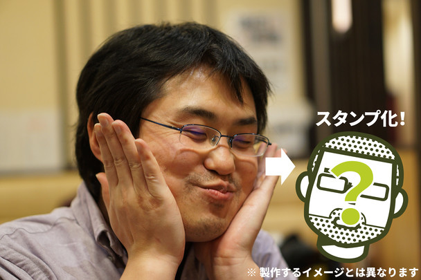

助けて！ "柳 英俊（だるやなぎ）LINE スタンプ プロジェクト”が息をしてないの！
公開日：

「世界のフリー素材に、俺はなる！」高い志を胸に始められた“柳 英俊（だるやなぎ）LINE スタンプ プロジェクト”はプログラマー界隈からの熱烈な支持を受け、またたくまに8万円を超える資金を得た。
しかし、順風満帆かと思われたプロジェクトに突如、暗雲が立ち込める。
1ヶ月以上1円も投資されていません！！ 残りあとわずか皆さんお金を捨てるつもりで応援してください！！ 柳 英俊（だるやなぎ）LINE スタンプ プロジェクト https://t.co/XJwqBTvLLB pic.twitter.com/wYE7unljvC
— ＪＺ５ (@jz5) August 11, 2015スタートダッシュでそこそこの資金をだまし取った獲得したものの、そこから伸び悩んでしまったのだ。
— ＪＺ５ (@jz5) August 15, 2015「俺の LINE スタンプなど、誰も欲していなかったのか……」ショックを受け、倒れ伏すだるやなぎ。そこに颯爽と現れた敏腕プロデューサー @jz5 が囁く。「クラウドファンディングはスタートダッシュと締め切り間近が一番カネがあるまるんや……（ニヤリ」
お願い、死なないでだるやなぎ！あんたが今ここで倒れたら、世界のフリー素材になる約束はどうなっちゃうの？ 締め切りまで日はまだ残ってる。ここを耐えれば、LINE スタンプをゲットできるんだから！
次回「だるやなぎ死す」。デュエルスタンバイ！
追記
平和の土下座してきた pic.twitter.com/glGywZiwg8
— ハロー！！だるやなぎモザイク (@daruyanagi) August 15, 2015残り3万円、どうかよろしくお願いいたします。
お詫びと訂正

土下座してお願いしたつもりでしたが、正しくは韓国の最敬礼「クンジョル」だったかもしれないです。僕にはよくわかんないので、とりあえずお詫びしておきます。